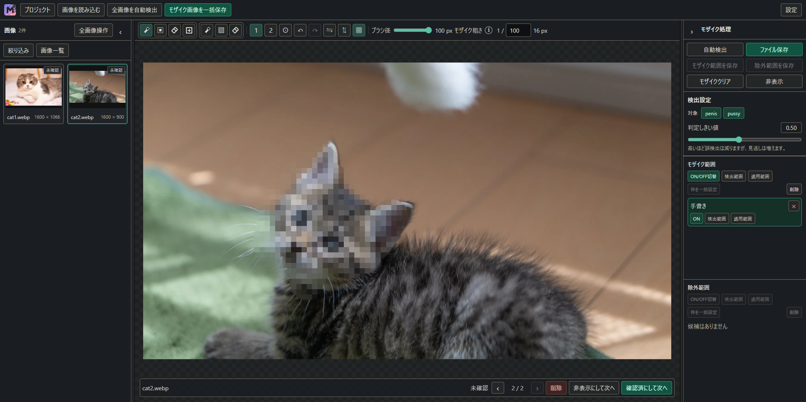
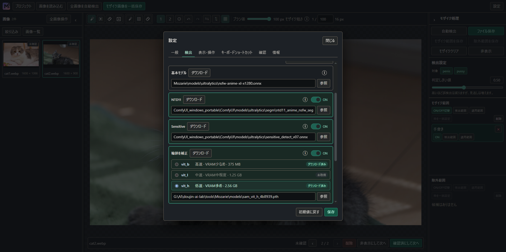
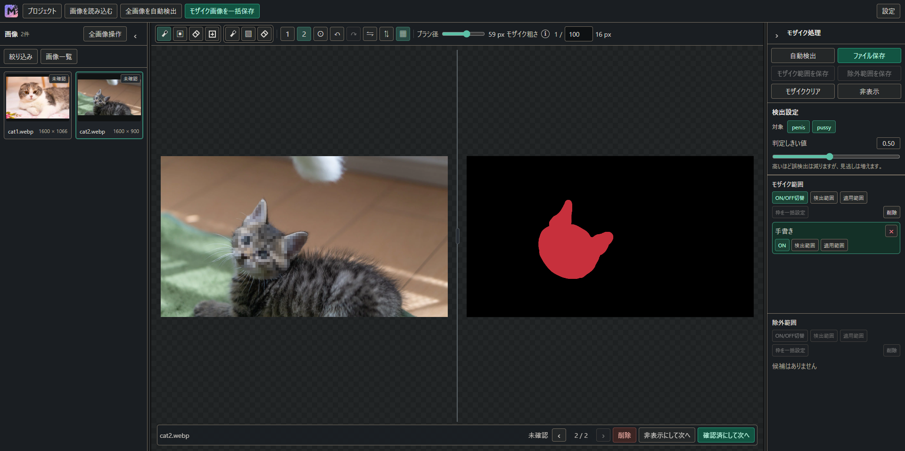

自動検出と手描きで範囲を整え、画像を確認して保存するWindowsアプリです。
Windows / PNG・JPEG・WebP / MIT License



編集結果と適用範囲を並べて、モザイクのかかる場所を確認できます。
ブラシと消しゴムで、かけたい範囲と残したい部分を整えられます。
フィルターで確認する画像を絞り、編集した画像をまとめて保存できます。
検出・編集・保存はWindowsのPC上で行います。
Mozarieの作業画面を拡大表示